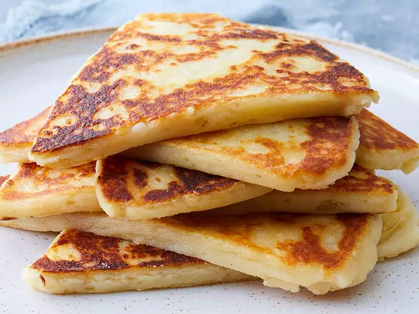

Potato Scones Recipe

Golden brown Potato scones
Tattie scones are similar to potato pancakes. From an Irish and Scottish background, these scones are the perfect side with any breakfast meal and are a family favorite! Add onion, pepper, or any other spices for flavor. Serve with butter. Enjoy.
Ingredients
- 1 pound cooked potatos
- 4 ounces self-rising flour
- 2 ounces butter
- ½ pinch salt
Directions
- Heat a lightly greased griddle or cast iron skillet over medium-high heat.
- Mash potatos with flour,butter,and salt in a large bowl until a stiff dough forms.
- Turn dough out onto a lightly floured work surface. Knead dough lightly and roll dough out to a 1/2-inch-thick circle. Cut into 6 equal wedges.
- Working in batches, cook scones on the hot griddle until golden brown, 4 to 5 minutes per side.